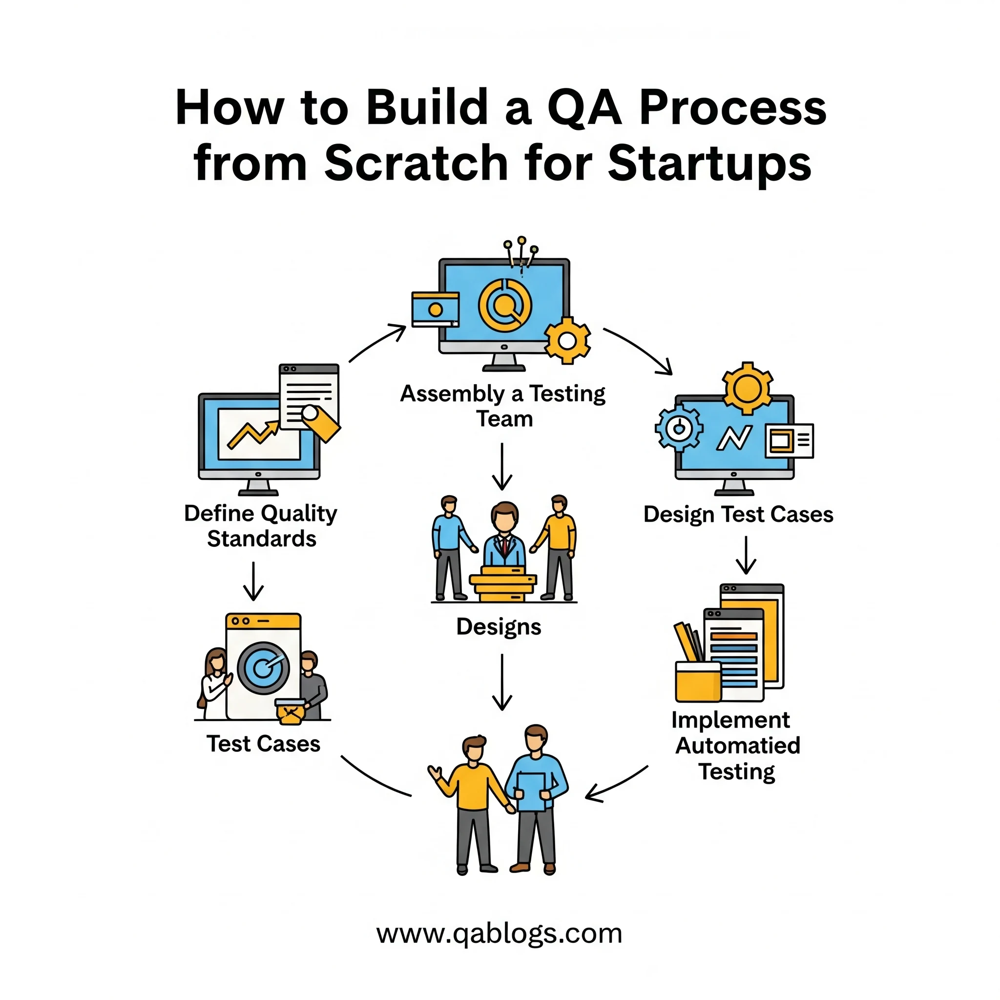

How to Build a QA Process from Scratch for Startups: A Complete Guide to Quality Assurance Success

Key Takeaways
- Establishing a robust QA process from day one is critical for startup survival and growth.
- A quality-first culture, where everyone owns quality, is fundamental.
- Start with lean QA structures and gradually scale your team and processes.
- Prioritize risk-based manual testing and strategic automation (unit, integration, E2E).
- Integrate QA into CI/CD pipelines with quality gates and monitor key metrics.
- Avoid common pitfalls like over-automation too early or neglecting non-functional testing.
In the fast-paced world of startups, where "move fast and break things" often becomes the unofficial motto, quality assurance can seem like a luxury rather than a necessity. However, 88% of users are less likely to return to a website after a bad user experience, and software bugs cost the US economy an estimated $2.08 trillion annually according to the Consortium for Information and Software Quality. For startups operating on tight budgets and timelines, establishing a robust QA process from day one isn't just important—it's critical for survival and growth.
Building a quality assurance process from scratch might seem daunting, especially when resources are limited and deadlines are aggressive. Yet, startups that invest in proper QA processes early on see 40% fewer post-release defects and significantly higher customer satisfaction rates. This comprehensive guide will walk you through creating a scalable, cost-effective QA process that grows with your startup while maintaining the agility that makes startups competitive.
Understanding the Startup QA Landscape
The Unique Challenges Startups Face
Startups operate in a fundamentally different environment than established enterprises. Limited budgets, small teams, rapid iteration cycles, and the pressure to achieve product-market fit create unique challenges for implementing quality assurance processes.
Resource Constraints: Unlike large corporations with dedicated QA departments, startups often have developers wearing multiple hats, including testing responsibilities. This creates a need for lightweight, efficient QA processes that don't slow down development cycles.
Rapid Feature Development: Startups frequently pivot, add features, or change direction based on market feedback. Your QA process must be flexible enough to accommodate these changes without becoming a bottleneck.
Technical Debt vs. Speed: The classic startup dilemma of building quickly versus building correctly requires a balanced QA approach that ensures quality without sacrificing speed to market.
Why QA Matters More for Startups
While established companies can often survive a few bugs or poor user experiences, startups rarely get second chances. First impressions are crucial when you're trying to establish credibility and build a user base. A single critical bug or poor user experience can result in negative reviews, lost customers, and damaged reputation that takes months or years to recover from.
Consider the case of Knight Capital Group, which lost $440 million in 45 minutes due to a software glitch in 2012. While this is an extreme example, it illustrates how software defects can have catastrophic consequences, particularly for companies without the financial cushion to absorb such losses.
Phase 1: Foundation Building - Essential QA Components
Establishing Your QA Culture and Mindset
Before diving into tools and processes, it's crucial to establish a quality-first culture within your startup. This begins with leadership commitment and extends to every team member understanding their role in maintaining product quality.
Quality Ownership: In startups, everyone should feel responsible for quality, not just designated QA personnel. Developers should test their own code, product managers should understand testing implications of feature requests, and customer support should provide feedback on common user issues.
Shift-Left Testing Philosophy: Implement testing as early as possible in the development lifecycle. This approach, known as "shift-left testing," helps identify and fix issues when they're less expensive to resolve. Studies show that fixing a bug during development costs 10-100 times less than fixing it after release.
Core QA Team Structure for Startups
Most startups begin with a lean QA structure that evolves as the company grows. Here's a practical approach to building your initial QA team:
- Phase 1 (0-10 employees): Developers handle their own testing with peer reviews and basic automated testing. One person (often a senior developer or technical co-founder) takes overall responsibility for QA standards and processes.
- Phase 2 (10-25 employees): Hire your first dedicated QA engineer or promote someone internally. This person should have both manual testing skills and automation experience to maximize impact.
- Phase 3 (25+ employees): Expand to a small QA team with specialized roles: test automation engineer, manual QA tester, and potentially a QA lead or manager.
Essential Documentation and Standards
Even in the early stages, basic documentation is crucial for maintaining consistency and enabling team growth. Start with these essential documents:
- Test Strategy Document: A high-level document outlining your overall approach to testing, including what types of testing you'll perform, when they'll be conducted, and who's responsible for each type.
- Definition of Done: Clear criteria that must be met before a feature is considered complete. This should include functional requirements, performance standards, and testing checkpoints.
- Bug Reporting Standards: Establish consistent formats for reporting bugs, including severity levels, reproduction steps, and expected vs. actual behavior. This ensures efficient communication and faster resolution times.
Phase 2: Choosing the Right Testing Approach
Manual Testing Strategy
Manual testing remains crucial for startups, particularly for exploratory testing, usability evaluation, and scenarios that are difficult to automate. However, manual testing should be strategic and efficient.
Risk-Based Testing: Focus manual testing efforts on high-risk areas of your application. These typically include new features, critical user paths, integration points, and areas with a history of defects.
Exploratory Testing Sessions: Schedule regular exploratory testing sessions where team members interact with your product as real users would. This often uncovers usability issues and edge cases that scripted tests might miss.
Cross-Browser and Device Testing: Ensure your application works across different browsers, devices, and operating systems. Tools like BrowserStack or Sauce Labs can help, but manual verification on actual devices remains important.
Automated Testing Framework Selection
Automation is essential for startups to maintain quality while scaling rapidly. However, choosing the right automation strategy requires careful consideration of your technology stack, team skills, and long-term goals.
Unit Testing: Start with unit tests as they provide the highest return on investment. They're fast to run, easy to maintain, and catch issues early in the development process. Aim for at least 70% code coverage, focusing on critical business logic.
Integration Testing: Test how different components of your system work together. This is particularly important for startups using microservices architecture or multiple third-party integrations.
End-to-End (E2E) Testing: Automate critical user journeys through your application. Start with 5-10 key scenarios that represent core user flows, such as user registration, login, and primary feature usage.
Popular Tool Combinations by Technology Stack:
- Web Applications: Selenium WebDriver with Jest/Mocha for JavaScript, or Pytest for Python
- Mobile Applications: Appium for cross-platform testing, or native tools like XCTest (iOS) and Espresso (Android)
- API Testing: Postman/Newman, REST Assured, or Playwright for API automation
API Testing and Backend Quality Assurance
For startups building web applications or mobile apps, robust API testing is crucial. APIs are the backbone of modern applications, and ensuring their reliability directly impacts user experience.
Contract Testing: Implement contract testing to ensure that API changes don't break existing integrations. Tools like Pact can help maintain compatibility between services.
Load and Performance Testing: Even early-stage startups should understand their application's performance characteristics. Simple load testing with tools like Apache JMeter or k6 can help identify bottlenecks before they impact users.
Security Testing: Implement basic security testing practices, including input validation testing, authentication testing, and SQL injection prevention. OWASP provides excellent guidelines for web application security testing.
Phase 3: Implementation and Scaling
Setting Up Your Testing Environment
A proper testing environment strategy is crucial for reliable QA processes. Startups often struggle with environment management due to resource constraints, but there are cost-effective approaches.
Environment Strategy:
- Development Environment: Where developers work and perform initial testing
- Staging Environment: A production-like environment for comprehensive testing
- Production Environment: The live application used by customers
Infrastructure as Code: Use tools like Docker, Terraform, or cloud-native solutions to ensure consistent environments. This reduces "it works on my machine" issues and makes scaling easier.
Data Management: Establish strategies for test data management, including data refresh processes and data privacy considerations. This is particularly important for startups handling sensitive customer information.
CI/CD Integration for Quality Gates
Continuous Integration and Continuous Deployment (CI/CD) pipelines are essential for maintaining quality while moving fast. Your QA process should integrate seamlessly with your deployment pipeline.
Quality Gates: Implement automated quality checks at each stage of your pipeline:
- Code Commit: Run unit tests and static code analysis
- Build Stage: Execute integration tests and security scans
- Deployment Stage: Run smoke tests and basic functionality checks
- Post-Deployment: Monitor application health and user experience metrics
Popular CI/CD Tools for Startups:
- GitHub Actions: Great for GitHub-hosted repositories, with generous free tiers
- GitLab CI/CD: Comprehensive solution with built-in container registry
- CircleCI: User-friendly with good Docker support
- Jenkins: Open-source option with extensive plugin ecosystem
Metrics and Monitoring Setup
What gets measured gets managed. Establishing the right metrics from the beginning helps you understand the effectiveness of your QA process and identify areas for improvement.
Key QA Metrics for Startups:
- Defect Detection Rate: Percentage of bugs found during testing vs. production
- Test Coverage: Code coverage percentage for automated tests
- Mean Time to Resolution (MTTR): Average time to fix critical bugs
- Test Execution Time: How long your test suite takes to run
- Customer-Reported Issues: Number and severity of bugs reported by users
Monitoring and Alerting: Implement application monitoring to catch issues in production. Tools like Sentry for error tracking, New Relic for performance monitoring, or open-source alternatives like Grafana can provide valuable insights.
Tools and Technology Stack Recommendations
Budget-Friendly QA Tools for Startups
Startups need to maximize value while minimizing costs. Here are cost-effective tool recommendations across different categories:
Test Management:
- TestRail: Comprehensive test case management with startup-friendly pricing
- Qase: Modern test management platform with free tiers
- Google Sheets/Airtable: Simple, cost-effective solutions for small teams
Bug Tracking:
- Jira: Industry standard with good integration capabilities
- Linear: Modern, fast bug tracking tool popular with startups
- GitHub Issues: Free with GitHub repositories, suitable for technical teams
Automation Tools:
- Playwright: Microsoft's modern browser automation tool, free and powerful
- Cypress: Developer-friendly E2E testing framework with good documentation
- Jest: Popular JavaScript testing framework for unit and integration tests
Performance Testing:
- k6: Modern load testing tool with developer-friendly scripting
- Apache JMeter: Free, open-source performance testing tool
- Lighthouse: Google's web performance testing tool, free and comprehensive
Open Source vs. Commercial Solutions
The choice between open source and commercial solutions often comes down to total cost of ownership, not just license fees. Consider these factors:
Open Source Advantages:
- Lower upfront costs
- Community support and rapid innovation
- Flexibility to customize and extend
- No vendor lock-in
Commercial Solution Advantages:
- Professional support and SLAs
- Better integration and user experience
- Compliance and security certifications
- Reduced maintenance overhead
Hybrid Approach: Many successful startups use a combination of open source and commercial tools, starting with open source solutions and gradually investing in commercial tools as they scale and have specific enterprise needs.
Best Practices and Common Pitfalls
QA Process Optimization Strategies
Effective QA processes for startups require continuous optimization. Here are proven strategies to maximize efficiency:
Risk-Based Testing Approach: Not all features are equally critical. Focus your testing efforts on high-risk areas that could significantly impact user experience or business operations. Use a risk matrix to prioritize testing activities based on probability and impact.
Test Pyramid Implementation: Follow the test pyramid principle with a strong foundation of unit tests, a smaller number of integration tests, and minimal but comprehensive end-to-end tests. This approach provides good coverage while keeping test execution times reasonable.
Continuous Test Maintenance: Treat test code with the same respect as production code. Regularly review and refactor tests to ensure they remain reliable and maintainable. Flaky tests that fail intermittently can undermine confidence in your QA process.
Avoiding Common Startup QA Mistakes
Learning from others' mistakes can save significant time and resources. Here are the most common QA pitfalls startups encounter:
Over-Automation Too Early: While automation is important, trying to automate everything from day one often leads to brittle tests and maintenance overhead. Start with manual testing for exploratory work and gradually automate stable, repetitive scenarios.
Neglecting Non-Functional Testing: Startups often focus exclusively on functional testing while ignoring performance, security, and usability testing. These non-functional aspects can significantly impact user experience and business success.
Inadequate Test Environment Management: Using production data for testing, inconsistent environments, or sharing test environments without proper coordination can lead to unreliable test results and security issues.
Ignoring Mobile Testing: With mobile usage continuing to grow, startups that don't properly test their mobile experiences risk losing significant user segments. This includes testing on real devices, not just simulators.
Scaling Your QA Process
As your startup grows, your QA process must evolve to meet new challenges while maintaining efficiency:
Team Growth Strategy: Plan for QA team expansion before you desperately need it. Hiring and training QA professionals takes time, and the impact of quality issues increases as your user base grows.
Process Documentation: As your team grows, informal communication becomes insufficient. Document your processes, standards, and tribal knowledge to ensure consistency and enable new team member onboarding.
Tool Evolution: Be prepared to evolve your toolset as you scale. Tools that work well for a 5-person team might not be suitable for a 50-person organization. Plan for migration costs and timeline when selecting tools.
Real-World Case Studies
Case Study 1: E-commerce Startup Success
Background: A direct-to-consumer fashion startup with a team of 15 people needed to establish QA processes for their web platform and mobile app.
Challenge: Limited budget, aggressive growth targets, and seasonal traffic spikes requiring reliable performance.
Solution Implemented:
- Started with manual testing for critical user journeys (product search, checkout, account management)
- Implemented automated unit testing for payment processing and inventory management
- Used Cypress for E2E testing of checkout flows
- Set up basic performance monitoring with Google Analytics and Hotjar
Results:
- Reduced customer-reported checkout issues by 75%
- Improved conversion rates by 12% through better user experience
- Successfully handled Black Friday traffic with zero downtime
- Scaled to 50 employees while maintaining quality standards
Key Lessons: Starting with high-impact manual testing and gradually automating critical flows provided the best ROI for their limited resources.
Case Study 2: SaaS Platform Quality Journey
Background: A B2B SaaS startup providing project management tools needed to establish enterprise-grade quality processes to attract larger customers.
Challenge: Complex integrations with third-party tools, multiple user roles and permissions, and the need for high reliability.
Solution Implemented:
- Developed comprehensive API testing suite using Postman and Newman
- Implemented contract testing between microservices using Pact
- Created automated regression tests for permission systems
- Established staging environment with production-like data
Results:
- Achieved 99.9% uptime in their first year
- Reduced integration-related support tickets by 60%
- Successfully passed enterprise security audits
- Scaled from 10 to 100 enterprise customers
Key Lessons: Investing in API testing and integration testing early paid dividends when scaling to enterprise customers with complex requirements.
Future-Proofing Your QA Strategy
Emerging Trends in Startup QA
The QA landscape continues to evolve rapidly, and startups need to stay aware of emerging trends that could impact their quality strategy:
AI-Assisted Testing: Machine learning is beginning to impact testing through intelligent test generation, visual testing, and predictive analytics for test optimization. While still emerging, startups should monitor these developments for future adoption.
Shift-Right Testing: Complementing shift-left testing, shift-right focuses on testing in production through techniques like canary deployments, feature flags, and real user monitoring. This approach is particularly valuable for startups practicing continuous deployment.
Cloud-Native Testing: As more startups adopt cloud-native architectures, testing strategies must evolve to address containerized applications, serverless functions, and distributed systems.
Building Adaptable QA Processes
Future-proofing your QA process requires building in flexibility and adaptability:
Modular Process Design: Create QA processes that can be modified or extended without complete overhaul. This includes using standardized interfaces, maintaining clear documentation, and avoiding tight coupling between tools and processes.
Cross-Functional Skills Development: Encourage team members to develop skills across multiple areas (development, testing, operations) to create a more resilient and adaptable team.
Technology Evaluation Framework: Establish criteria for evaluating new tools and technologies to ensure consistent decision-making as your needs evolve.
Measuring QA Success and ROI
Key Performance Indicators (KPIs)
Demonstrating the value of QA investments is crucial for securing continued support and resources. Focus on metrics that clearly tie to business outcomes:
Customer Impact Metrics:
- Customer satisfaction scores and Net Promoter Score (NPS)
- Customer retention rates and churn analysis
- Support ticket volume and resolution times
- App store ratings and review sentiment
Business Impact Metrics:
- Revenue impact of quality issues
- Cost avoidance through early defect detection
- Time to market for new features
- Development team productivity metrics
Operational Efficiency Metrics:
- Test automation coverage and execution times
- Defect detection effectiveness
- Release frequency and success rates
- Team velocity and cycle time
Calculating QA ROI
While calculating exact ROI for QA activities can be challenging, several approaches can help demonstrate value:
Cost of Quality Framework: Track prevention costs (QA activities), appraisal costs (testing and reviews), and failure costs (bug fixes and customer impact). The goal is to optimize total cost while maintaining quality standards.
Defect Cost Analysis: Research shows that fixing defects becomes exponentially more expensive as they progress through the development lifecycle. Track the stage at which defects are discovered to quantify the value of early detection.
Opportunity Cost Measurement: Calculate the potential revenue impact of quality issues, including lost sales, customer churn, and reputation damage.
Conclusion: Your Path to QA Excellence
Building a QA process from scratch for your startup is both a challenge and an opportunity. The decisions you make early in your company's life will impact your ability to scale, maintain customer satisfaction, and compete in the market. The key is to start with a solid foundation that can evolve with your needs.
Remember that QA is not just about finding bugs—it's about building confidence in your product, enabling faster development cycles, and creating exceptional user experiences. The most successful startups treat quality as a competitive advantage, not a necessary evil.
Your Next Steps:
- Assess Your Current State: Evaluate your existing development and testing practices to identify gaps and opportunities
- Start Small: Implement basic QA processes and gradually expand as you learn what works for your team and product
- Invest in People: Quality culture starts with people who care about excellence and continuous improvement
- Measure and Iterate: Establish metrics to track your progress and continuously refine your approach
- Plan for Scale: Design processes that can grow with your company while maintaining efficiency
The journey to QA excellence is ongoing, but every step you take builds a stronger foundation for your startup's success. Quality is not a destination—it's a commitment to your users, your team, and your company's future.
Are you ready to transform your startup's approach to quality assurance? The tools, strategies, and frameworks outlined in this guide provide a roadmap for building QA processes that drive business success. Start implementing these practices today, and watch as improved quality becomes a key differentiator in your competitive landscape.
For more insights on QA best practices, testing strategies, and emerging technologies in quality assurance, continue following QA Blogs. We're committed to helping QA professionals and development teams build better software through better testing practices.
Join Our Community of QA Professionals
Get exclusive access to in-depth articles, testing strategies, and industry insights. Stay ahead of the curve with our expert-curated content delivered straight to your inbox.
Nikunj Mistri
Founder, QA Blogs
About the Author